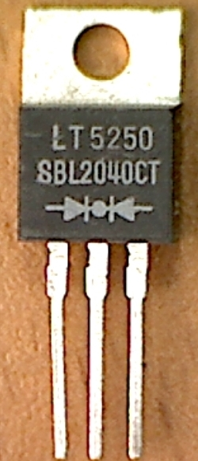
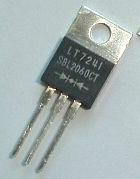

Диоды с барьером Шотки
SBL2030CT - SBL2060CT
SBL2030CT - SBL2060CT - Выпрямители с барьером Шотки.


Рис. 1 - Внешний вид диодов SBL2030CT - SBL2060CT
| Параметр | SBL2030CT | SBL2040CT | SBL2050CT | SBL2060CT |
|---|---|---|---|---|
| Прямой ток | 20 A | |||
| Повторяющееся обратное напряжение | 30 В | 40 В | 50 В | 60 В |
| Прямое напряжение | 0,55 В | 0,75 В | ||
| Ударный прямой ток | 250 А | |||
| Обратный ток | 1 мА | |||
| Корпус: | TO-220-3 | |||